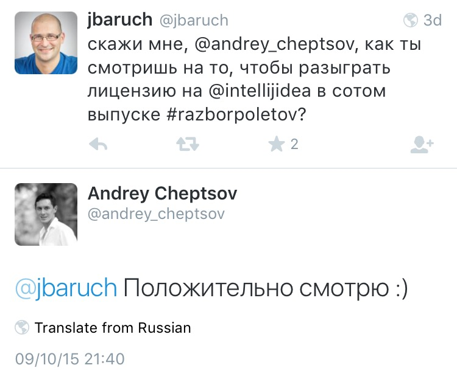

English, marketeer!
Do you speak it?
JetBrains Product Marketing School
- July 28—August 5, 2015
- 20 participants
- 14 talks by 8 speakers
- 5 home assignments & more
About you
Name, Education & Role
Your Expectations to Know
- Something about product marketing
- Product marketeer responsibilities
- What JetBrains does in marketing that SKB Kontur doesn't
- Promotion & research ideas
- Customer lifecycle management
- Product pricing & market positioning
- Best acquisition channels: outbound sales, ads, email
Your Expectations to Know :)
- If JetBrains is as good as it seems
- Project Manager vs. Product Manager vs. Product Marketing Manager
Agenda
- Product marketing managers at JetBrains
- Strategic product management
- Operational product management
- Contemporary сase study
Q & A sessions, coffee breaks, and a home assignment.
JetBrains
- Since 2000
- $ 110kk in revenue in 2014
- Privately owned, never raised funds
- Offices in Czech Republic, Russia, Germany, USA
JetBrains Products
- IntelliJ IDEA: 33 % of Java IDE market
- ReSharper: 600k downloads in MS VS Gallery
- Android Studio: official IDE for Android, based on IntelliJ IDEA
People at JetBrains
- 500+ in 2015
- Communications in Russian and English
- Almost anyone write code, including both CEOs
People at JetBrains
- CEOs, VPs, founders, fellows
- Team leads
- Team members
Teams at JetBrains
- 20+ product teams
- 15+ functional teams
Self-organized and self-sufficient.
Product Team Roles at JetBrains
- Team lead
- Software developer
- QA engineer
- UX specialist
- Support engineer
- Technical writer
- Product marketing manager
Product Marketing Areas
- Product management
- Communications
- Outbound
- Inbound
- Internal
Outbound Communications
- Community management
- User groups
- Opinion leaders
- Open source projects
- Educational institutions
Outbound Communications
- Participation in conferences & events
- Sponsorships, talks, booths, gifts
- Visits to user groups
- Visits to corporate customers

Know
this
man?
Outbound Communications
- Content production
- Blog posts
- Tutorials
- Webinars
- Screencasts
- Newsletters
- Website content
- Context ads
Outbound Communications
- Public relations
- Social networks

Developer Advocates
Rescue Rangers
Inbound Communications
- Customer feedback
- Customer activity analysis
- Market trends & forecasts
Internal Communications
PMM as a hub:
- to other product teams
- to Sales team
- pricing & discounts
- regional markets
Strategic Product Management
- Product planning
- Release management
- Pricing strategy
- Business development
- Partnerships
- Co-marketing
- Integration & technology support
Operational Product Management
- Promotion
- Customer lifecycle optimization (w/ internet marketing)
- Lead nurturing (w/ email marketing)
- Marketing automation
Communications with Functional Teams
- General marketing
- Internet marketing
- Email marketing
- Research
- Developer Advocacy
- Web Development
- Internal Development
#2. Strategic product management
Development Lifecycle
- Problem + team = product
- Early access program, release candidate, public preview
- Major & minor releases
- Feedback from market = new roadmap
Heavily influenced by distribution model.
Roadmaps
- At least for every major release (6–9 months)
- Estimated time available
- Major (driver) features
- No fear to overpromise
- Public
- Live updates
Outcomes of Public Roadmaps
- Early customer feedback
- Commitment as a by-product
~70 % of planned features are delivered.
Some unplanned too.
Underpromise and overdeliver
Press-release driven development
Product Lifecycle Curve
Can you spot the problem?
Marketing Mix
- Product → Consumer
- Price → Cost
- Promotion → Communication
- Place → Channel
Pricing Strategy Matrix
|
Low Quality |
High Quality |
| Low Price |
Economy Pricing |
Market Penetration |
| High Price |
Market Skimming |
Premium Pricing |
Take the product lifecycle stage into account.
Pricing Models
Product ↔ Cost ↔ Price ↔ Value ↔ Customer
- Value-based
- Cost-based
- Fixed & variable costs
- Break-even point
Not any feature creates value
Price Levers
- Quantity of money
- Quantity of goods & services
- Quality of goods & services
- Place and time for payment
- Acceptable form of payment
Discounts Motivation
- Improving cash-flow
- Solving problems
- Getting rid of excess products
- Breaking into markets
- Driving volume
- Dealing with competitors
Discount Types
- Prompt payment
- Seasonal
- Targeted
- Cumulative quantity
- Coupons
Pricing Strategy Metrics
- Price elasticity
- Revenue growth
- Customer lifetime value
- Average revenue per user
- Churn rate
- Retention rate
Word of Mouth
is Your Best Marketing Tool
Communications with Customers
- Standard marketing messaging is harmful
- Developers like to talk to developers, not to marketeers
Community Development
- Developers at corporations
- Individual developers
- User groups
- Open source projects
- Students, classrooms & campus ambassadors
- Associations, for- & non-profits
- Plugin developers
Community Development Cases
- PhpStorm & Drupal: framework support
- PhpStorm & Wordpress: tailored open-source program
- CLion: „C/C++ facts“ research
- Android Studio: switch from Eclipse to the IntelliJ platform
Less code is
always better
#3. Operational product management
Customer
Lifecycle
Optimization
Customer Lifecycle Models
- AIDA: awareness, interest, desire, action
- AIDAS: awareness, interest, desire, action, satisfaction
- AIDALSlove: attention, interest, search, action, like, share, love
Pirate metrics:
- AARRR: acquisition, activation, revenue, retention, referral
Funnel Optimization Levers
- Acquisition: internet marketing, pricing & discounts
- Activation: email marketing, beginner experience
- Revenue: upselling, cross-selling
- Retention: new features, subscription model
- Referral: mission for customers, emotional relationship
Organic Channels
- Direct
- Organic search
- Social media
- Application stores
- Limited costs (organic ≠ free) & unlimited potential income
- No direct control
- Long term results
SEO 101
- Make your website indexable
- Site architecture
- Code quality & server settings
- Trust factors: speed, age
- Content duplication issues
- Relevant search engines
- Collect traffic
Traffic =
impressions ×
CTR
More Impressions, Better CTR
- SERP position
- New queries
- Additional pages
- Vertical searches
- SERP position
- Title, description, icon
- Rich snippets (e.g., w/ Open Graph)
- Sitelinks
SEO Process
- Choose keywords for pages
- Navigational
- Transactional
- Informational
- Optimize pages
- Promote them
- Analyze results & repeat
Keywords Data Sources
- Google AdWords keywords planner
- Websites of competitors
- Search engine autosuggest
- Historical data (e.g., logs)
Long Tail Keywords
- 10 % of queries for 90 % of sessions
- 20 % of queries never used before
SMM 101
- Use structured data markup
- Use rich content: images, videos, etc.
- Use string CTA
Direct Traffic Hygiene
- Human-readable URLs
- Short and descriptive titles
- Redirect outdated pages, no 404s
- 404 page with navigational links
Paid Channels
- Paid search
- Media ads
- RTB & ad networks
- Social media ads
- Review sites
- Sponsorships
- External email campaigns
- Offline advertising (internet marketing, huh?)
- Limited costs (organic ≠ free) & unlimited potential income
- No direct control
- Long term results
Paid Traffic Pricing Models
Cost per:
- mile
- click
- action
- lead
- sale
It's always CPM.
Paid Campaigns 101
- Choose one goal
- Choose right timing
- Verify traffic quality
Goals:
- Engagement
- Education
- Sales
- Downloads
- Thought Leadership
— Use advanced
targeting, Luke
Single channel customers?
Channel Attribution Models
- First interaction
- Last interaction
- Last paid search click
- Last non-direct click
- Linear
- Time decay
- Position based
— Create and test
your models, Luke
Conversion Rate Optimization
Conversion rate = completed goals ÷ total visitors
Visitors:
- Motivated
- Unmotivated
- Undecided
- I'm going to download!
- I'm not going to download.
- Should I download?
Types of Decision Makers
|
Fast |
Slow |
| Rational |
Technical description
Product overview
Feature list |
Full feature descriptions
Documentation
ROI predictions |
| Irrational |
Product messaging
Social proof
Number of users |
3rd party reviews
Success stories
Blog posts |
CRO 101
- Define a goal & success metrics
- Find weaknesses in existing flow
- Create a hypothesis
- Carry A/B or multivariate tests
Don't forget to share the results.
Email Marketing
Channels:
- News
- Sales
- Events
- Action-driven
Metrics:
- Delivery rate
- Bounce rate: hard, soft
- Open rate
- CTR
- Unsubscribe rate
...and CTA metrics.
Email Marketing Cases
Successful:
- Personal coupon offers
- Conference follow-ups
- „C/C++ facts“ research (remember it?)
- Lead nurturing
Poor:
- Commercial coupon offers
- Reply-to-sales CTA
Types of Knowledge
- Things we know
- Things we know we don't know
- Things we don't know but have some idea about
- Things we don't know that we don't know
Feel confident enough?
Knowledge Sources
AuthorityIntuitionPersonal preferencesPoliticsCommon sense- Facts
Fact Extraction Process
- Observation
- Hypothesis
- Experiment
- Data analysis
Let's apply it.
Research Methods
Primary:
- Surveys
- Expert estimation
- Tests
Secondary:
- Statistical data analysis
- Overview of external reports
- Quantitative text analysis
Research & Analytics Cases
- Usage of specific programming languages in the world
- Data aggregation: Stack Overflow, ITJobsWatch, Google Trends, Wikipedia
- Regional markets survey analysis